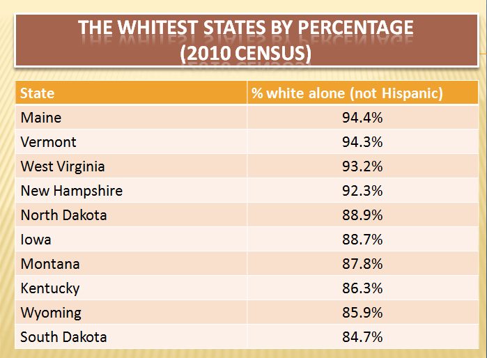
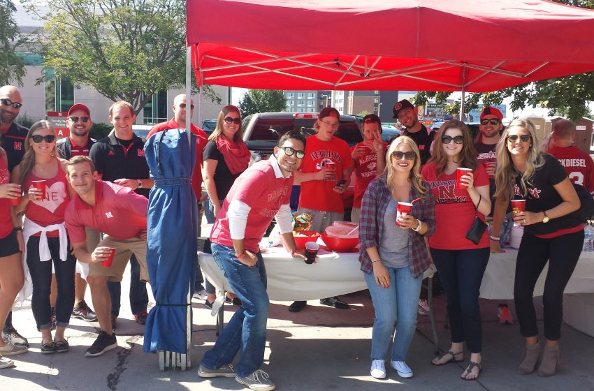
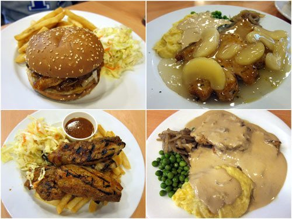
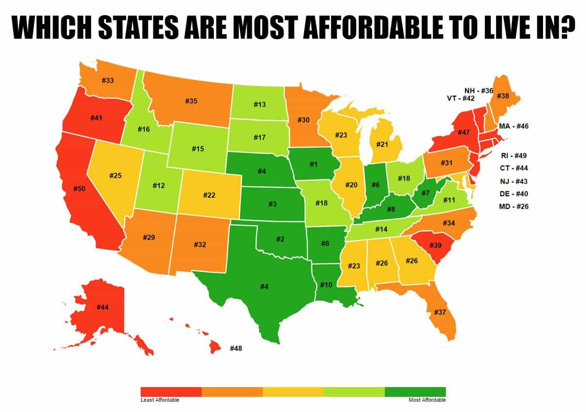

Daryush "Roosh" Valizadeh created ROK in October 2012. You can visit his blog at RooshV.com or follow him on Twitter and Facebook.


I’ve been writing about America and its culture for over a decade, but I’m afraid I’m not as knowledgeable about the entire country as I would like to be. Nearly all of my experiences come from Washington DC and New York City, two cities that are distinct from the rest of the nation. While there is great overlap between them and other American cities, the differences are significant enough that an American man may choose to not write off the country completely.
In my recent Midwest tour I spent time in five cities:
Here’s my video report:
The big outlier is Kansas City, a multicultural and generic city. If someone blindfolded you and dropped you there, you would have difficulty identifying which city it is since it serves as a template for Any Mega City, USA. Because of the high numbers of Hispanics and blacks, I felt like I was in a slightly safer Baltimore.
The rest of the cities can be somewhat generalized as one, even though there are certainly differences between them. Here is what I noticed about the Midwest, excluding Kansas City:

In Nebraska and South Dakota, you can go a long time without seeing a minority. In fact, I was the darkest person in the many venues I stepped foot into. I was actually amazed that parts of America could be as white as Eastern Europe, and they’re not even in the top ten of whitest states.
I would see large groups of girls talking to each other without having their phones out, which is quite rare in Washington DC. There were several points where I noticed that I was on my phone much more than those who surrounded me, making me feel ashamed.
I did not see more than two gay couples in four days, and the gays I saw were not overtly flaming. It’s almost as if I was in a homosexual free zone.
While I receive more eye contact in a place like Poland, I received many more smiles here. In Oklahoma City, in the dead of night without anyone else around, a woman walking her dogs said “Hello” to me, a gesture that I don’t experience anywhere else. The evil part of me couldn’t help but think that people this nice could be easily taken advantage of. Maybe we can convince them to do all sort of crazy things in the name of “equality” or their own “safety.”

Now I know why I’m not a big hit among men in the Midwest: my cold approach game would get you quickly marked in your town and ostracized. The best strategy here is to have a lot of friends and date the women in your social circle. Without a social circle in the Midwest, you’re a bit screwed when it comes to landing the best women, who get snapped up soon in college or even high school. If a girl in the Midwest is single past the age of 25, she likely has serious issues that make her an unsuitable mate. She’ll relocate to DC or NYC to try for a Sex And The City lifestyle of experiencing a few rounds of alpha male cock before she has to go back home a broken woman, lamenting about her fun days in the big city.

People here are fatter than in the coastal cities, and unfortunately this has impacted the women. All the benefits of women being friendlier and not addicted to smartphones doesn’t matter much if she’s a land whale.
It doesn’t take long in the Midwest to notice that the food culture is horrendous: the most popular foods are fried and loaded with simple carbs and salt with hardly any vegetables. Even worse is that that carries over into the home—they’re not preparing salads and healthy foods in their kitchens. The food is tasty, of course, but it makes you feel like crap and also causes constipation because of the lack of fiber.
The men are heavily into sports, hunting, machinery, and hanging out with the guys. The women are more girly and elegant with longer hair. While Midwest women are not as feminine as Eastern European women, they do put out a more down-to-Earth vibe that is less snobbish. The only difficulty is that it’s harder to tell in the beginning of an interaction if a Midwest girl is sexually attracted to you or just being her normal self. In more stand-offish cultures, like Ukraine, it’s easier to know where you stand with a girl if she merely talks to you for more than a couple minutes.

Washington DC is expensive. You get screwed not only for housing but for food and entertainment. The implied contract is that you work like a slave in your big city job that gives you a flashy business card so you can experience the finest distractions and colorful lights that mankind has to offer without ever being bored. That contract is a bad deal if you’re not a mindless sheep, especially when you consider that the bigger the city, the more likely a girl will participate in anonymous sex through nightlife and Tinder that makes her an unsuitable dating partner.
I’m not too familiar with the average salaries in the Midwest, but even if it’s lower than DC/NYC, the costs you experience there are so much less that you should still come out on top. Don’t let the big city lights seduce you: it’s a trap that inserts you into the rat race with very little opportunity to get out.
The Midwest consists of huge expanses of space. When a city wants to grow, it spreads outwards instead of upwards. This means you must have a car, even if you intend to live in the center of the city where the concept of public transportation has yet to catch on. Whatever the Midwest gains from the friendliness of the people is partially lost with the atomization of everyone driving in their car box for much of the day.
The place that stuck out the most for me was Sioux Falls. If I want to know what a “traditional” America looks like, this is perhaps the closest I’ll get (until I visit the Mountain West), though I would have to spend more time here to understand the marriage and religion dynamic. Yes, people are overweight and there also some corrupting influences, but I can say this with certainty: it’s less corrupting than a large Eastern European city like Warsaw, Poland. If I were to marry a village Ukrainian girl tomorrow, I’d prefer to live with her in Sioux Falls than Warsaw. This doesn’t even account for the fact that there are tons of towns smaller than Sioux Falls (population 150,000) that could be better for family life.
I’ll be the first to admit that my analysis of American culture mostly applies to large cities with high transient populations that have weaker social connections. If a man knows his neighbors and maintains long-term relationships with his friends from school, he won’t need cold approach game to meet a girl (he’ll just need game to keep her). But if he lives in a big, expensive city where he changes jobs and apartments frequently and where his friends move to different cities, he’s simply not going to have a strong enough social circle where he can meet attractive women, so he’s much more likely to find my advice helpful, which will be required just to get laid.
While Washington DC is a good place to generalize about American people since it attracts transplants from all over, it’s important to stress that it attracts the outliers from theose states. If a girl from South Dakota comes to DC to work for a non-profit, she is definitely not a typical girl from South Dakota who—if her sexual market value had been good and her mind sane—finds a good man to settle down with before 25 years of age.
At the same time you shouldn’t generalize about America from DC or NYC, our masters are using the same template where family and tribal bonds are being destroyed and replaced with dependence on corporations and the government. Most of you reading right now are from a Western city greater than 2 million people, meaning that the advice and observations I have for you mostly holds true, even if you’re not American. The fact that the advice I give to men is also applicable to those living in England, Canada, Australia, and even India is both convenient and disturbing.
Thanks to my trip to the Midwest, I finally understand why so many guys don’t understand me and often spout game denialist statements like, “Game is stupid, you just have to be a good guy and have some friends.” They say these things because they have a deep social network or are from smaller cities where game does not work in the same way it does in the big cities, or at least where it’s not as required to meet a girl who weighs less than 140 pounds.
I’m not going to change my advice to deal with small towns, especially since most of my readers live in big cities, but at least now I understand why so many men don’t see the point of what I teach. If only I was as lucky as them to grow up in a normal town with normal people whose minds aren’t addicted to the junk that comes out of New York City and Hollywood. Since I’m not, and since I continue to live in big cities, I must use game practices to sleep with women I desire, but now I’m definitely curious about other places in America that could be even better than what I saw in the Midwest.
This article was originally published on Roosh V.
Read Next: 4 Things I Observed From My Trip To New York City